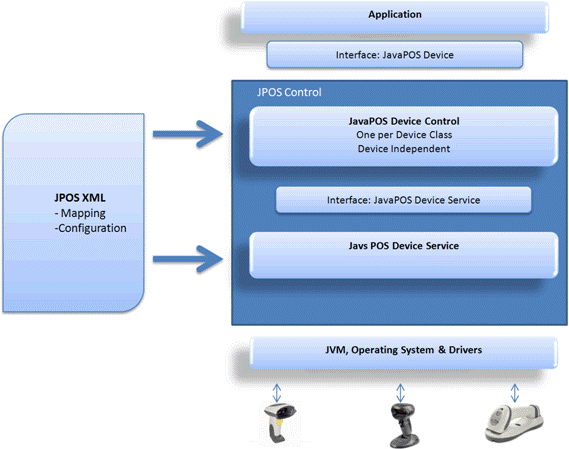

Overview
The POS application is either a Java application or an applet that uses one or more JavaPOS devices. An application accesses the JavaPOS device through the JavaPOS Device Interface, which is specified by Java interfaces.
Each JavaPOS device is a combination of these components:
- JavaPOS Device Control is a Java class that provides the interface between the application and the device category. It contains no graphical component and is therefore invisible at runtime and conforms to the JavaBeans API. The Device Control was designed so that all implementations of a device category's control are compatible. The Device Control can be developed independently of a Device Service for the same device category. They may even be developed by different companies.
- JavaPOS Device Service is a Java class that is called by the Device Control through the JavaPOS Device Service Interface. The Device Service is used by the Device Control to implement JavaPOS-prescribed functionality for a physical device. It can also call special event methods provided by the Device Control to deliver events to the application.
- The JPOS driver included with the Zebra Scanner SDK for Windows provides JNI (Java Native Interface) mechanisms to scanner and scale devices (CSJPOSScanner.dll and CSJPOSScale.dll) for the JavaPOS Device Service layer to interface with the CoreScanner driver.
Zebra Scanner JPOS Driver Architecture
Figure 1: Zebra Scanner JPOS Driver Architecture
For more information about JavaPOS, JavaPOS architecture, terminology and programmer's guides, refer to:
- JavaPOS home page at http://www.javapos.com/
- UPOS home page at http://www.nrf-arts.org/
NOTE: The terms JavaPOS and JPOS are used interchangeably in this document.
Version History
Release Notes for Windows
Release Notes for Linux
Version 3.06.0037 - 04/2024
- Bug fix - Minor sample app fix - State of Data Event Enable and Device Enable checkboxes in JPOS Sample application now shows the correct state when JPOS Scale profile is not opened.
- Bug fix - Fixed intermittent exception caused in the JPOS Scale live weight thread when attempting to restart or configure the scale while live weight is in progress.
- Bug fix - Minor sample app fix - Synchronized state of “Device Enable” checkbox when “Auto Device Enable” or “Enable Live Weight” selections are used.
- Added a new attribute as “ClearQueueOnRelease” to JPOS.xml file, to configure clearing the data queue when device is released.
- Bug fix - An exception is fired upon performing Zero Scale with weights greater than the firmware implemented scale zeroing weight limit.
- Bug fix - Prevented incorrectly throwing “Timed out with zero stable weight” exception after setting PIDXScal_ZeroValid to true in JPOS Scale live weight DIO.
Version 3.06.0034 - 01/2024
- Bug fix - Minor sample app fix - State of Data Event Enable checkbox in JPOS Sample application after a barcode is scanned now works as expected.
- Bug fix - Minor sample app fix - State of Device Enable checkbox in JPOS Sample application after a barcode is scanned with AutoDisable enabled now works as expected.
Version 3.06.0033 - 10/2023
- Added support for multiple JPOS Scanner instances when communicating to one application. This enables the JPOS driver to communicate to and track multiple scanners simultaneously and independently, like the MP7000 and DS8178/cradle.
- Added ability to “Filter Scanner Discovery” on 1.) Host Communication Mode, 2.) Model (a.k.a DS9908...) and 3.) Serial Number. JPOS now matches OPOS functionality.
- Bug fix - Check Health (Internal and External) now returns “No hardware” response, when no scanner(s) is connected on the USB bus.
- Bug fix - Sample App no longer shows incorrect weight when ReadWeight is called with Freeze Events enabled.
- Bug fix - Driver now returns “Not Ready” scale status, when scale is unplugged, while having live weight enabled.
Version 3.06.0029 - 07/2023
- Bug fix - Fixed issue that incorrectly appended a Label ID for “NCR label” with barcode type ISSN.
- Bug fix - Fixed issue relevant to error arguments (locus and response) in JPOS read weight events.
- Sample App Security fix - Updated library “xercesImpl.jar” used in JPOS Sample application from v2.11.0 to v2.12.2 to resolve security vulnerabilities.
- Sample App Bug fix - Device enable button’s state now gets updated upon enabling auto device enable (button) in JPOS scale.
- Sample App Bug fix - Barcode name now correctly displayed for Han Xin Code.
Version 3.06.0028 - 04/2023
- Bug fix in Sample App - Fixed error message incorrectly displayed in JPOS Sample application when Zero Scale command is called and weighing item below 30 grams.
- Update JPOS driver to fire Scale status update events whenever a status update and a weight change is detected.
- Bug fix in Sample App - Made the display format for scale weight consistent in the sample application for Read Weight, Live Weight and Direct IO NCR Live Weight calls.
- Bug fix in JPOS Sample App - Fixed application lockup if enabling both live weight and auto disable simultaneously.
Version 3.06.0023 - 10/2022
- Enhanced driver to support NCR requested “HealthCheck” label IDs.
- Bug fix - “Get Error Response” API now returns the correct error on Read Weight in Scale.
- Bug fix - Deliver an error event with Error response, ER_CONTINUEINPUT, when all items of the queue are delivered and DataEvent is enabled.
- Minor UI optimizations in the JPOS Sample Application for Windows.
Version 3.06.0022 - 08/2022
- Enhanced driver to support Freeze Events in JPOS Scale.
- Bug fix - ReadWeight events now reported correctly when DataEventEnabled is false and LiveWeight is true.
Version 3.06.0021 - 06/2022
- Bug fix - ReadWeight events now reported correctly when DataEventEnabled is false and LiveWeight is true.
- Enhanced driver to support all NCR requested “ScanData” label IDs.
Version 3.06.0018 - 04/2022
-
Enhanced Toshiba Global Commerce Solutions (TGCS) POS system support
-
JPOS driver enhanced to support System Management Information calls from TGCS POS systems.
- Corescanner enhanced to support TGCS' CIM Service Provider = “UPOS_BarcodeScanner” queries
-
JPOS driver enhanced to support System Management Information calls from TGCS POS systems.
Version 3.06.0015 - 01/2022
- Updated Windows JPOS sample application to support smaller/lower resolutions monitors.
- Fixed rarely seen JPOS statistics retrieval issue.
Version 3.06.0013 - 10/2021
- Added support to execute DirectIO commands without claiming the device.
- JPOS sample application enhancement to display the “Live Weight” and the logs on live weight status update events.
- Enhanced logging in JPOS driver including access to barcode data, power state, scale weight, and what API calls have been made.
Version 3.06.0010 - 08/2021
- Enhanced logging in JPOS driver including access to barcode data, scale weight, and what API calls have been made.
Version 3.06.0006 - 04/2021
- Add support for “extended error codes” for NCRDIO_SCALE_LIVE_WEIGHT DirectIO command in JPOS.
- Add support for JPOS Scale status responses.
Version 3.06.0003 - 01/2021
- Added support for Scanner DirectIO RESET command.
- Added support for custom MP7000 scale result codes for ErrorOverWeight, ErrorUnderZero and ErrorSameWeight.
Version 3.06.0002 - 10/2020
- JPOS driver update. Removed Apache Xerces XML parser dependency from the Zebra JPOS Service Object (SO).
Version
- JPOS driver update. Removed Apache Xerces XML parser dependency from the Zebra JPOS Service Object (SO).
Version 3.05.0003 - 04/2020
- For NCR based retail POS customers- Added support for NCR Direct I/O command in JPOS drivers (Scanner and Scale).
- JPOS driver update. JPOS driver now uses a common code base with the more mature Linux JPOS driver.
- JPOS driver operation now also validated on OpenJDK 11, in addition to existing validation on the Oracle JDK.
Version 3.05.0001 - 01/2020
- Enhanced the JPOS driver to meet fully JPOS 1.14 specification compliance.
- Enhanced JPOS demo app to display barcode data in HEX format.
- Enhanced JPOS driver to support scanner configuration through a jpos.xml file.
Version 3.02.0000 - 08/2017
- Updated JPOS sample application to demonstrate Direct I/O functionality.
Version 2.04.0000 - 08/2014
- JPOS supports both 64bit and 32bit JVMs on 64bit platforms.
Version 4.4.1-50 - 04/2024
- Bug fix - Minor sample app fix - State of Data Event Enable and Device Enable checkboxes in JPOS Sample application now shows the correct state when JPOS Scale profile is not opened.
- Bug fix - Fixed intermittent exception caused in the JPOS Scale live weight thread when attempting to restart or configure the scale while live weight is in progress.
- Bug fix - Minor sample app fix - Synchronized state of “Device Enable” checkbox when “Auto Device Enable” or “Enable Live Weight” selections are used.
- Added a new attribute as “ClearQueueOnRelease” to JPOS.xml file, to configure clearing the data queue when device is released.
- Bug fix - An exception is fired upon performing Zero Scale with weights greater than the firmware implemented scale zeroing weight limit.
- Bug fix - Prevented incorrectly throwing “Timed out with zero stable weight” exception after setting PIDXScal_ZeroValid to true in JPOS Scale live weight DIO.
Version 4.4.1-49 - 01/2024
- Enhanced the JPOS driver to send device enable/disable commands without checking the current status.
Version 4.4.1-47 - 01/2024
- Bug fix - Minor sample app fix - State of Data Event Enable checkbox in JPOS Sample application after a barcode is scanned now works as expected.
- Bug fix - Minor sample app fix - State of Device Enable checkbox in JPOS Sample application after a barcode is scanned with AutoDisable enabled now works as expected.
Version 4.4.1-45 - 10/2023
- Bug fix - Check Health (Internal and External) now returns “No hardware” response, when no scanner(s) is connected on the USB bus.
- Bug fix - Sample App no longer shows incorrect weight when ReadWeight is called with Freeze Events enabled.
- Bug fix - Driver now returns “Not Ready” scale status, when scale is unplugged, while having live weight enabled.
Version 4.4.1-44 - 10/2023
- Added support for multiple JPOS Scanner instances when communicating to one application. This enables the JPOS driver to communicate to and track multiple scanners simultaneously and independently, like the MP7000 and DS8178/cradle.
- Added support to filter scanner discovery by host mode, model and serial number. The scanners are filtered by comm protocol. Additional filters can include Model Name and/or Serial number.
- JPOS Sample application - Added support to create multiple JPOS Scanner instances.
Version 4.4.1-36 - 04/2023
- Bug fix in Sample App - Fixed error message incorrectly displayed in JPOS Sample application when Zero Scale command is called and weighing item below 30 grams.
- Update JPOS driver to fire Scale status update events whenever a status updates and a weight change is detected.
- Bug fix in Sample App - Made the display format for scale weight consistent in the sample application for Read Weight, Live Weight and Direct IO NCR Live Weight calls.
- Bug fix in JPOS Sample App - Fixed application lockup if enabling both live weight and auto disable simultaneously.
Version 4.4.1-33 - 10/2022
- Enhanced driver to support NCR requested “HealthCheck” label IDs.
- Bug fix - "Get Error Response" API now returns the correct error on Read Weight in Scale.
- Minor UI optimizations in the JPOS Sample Application for Windows.
Version 4.4.1-32 - 04/2023
- Bug fix in Sample App - Fixed error message incorrectly displayed in JPOS Sample application when Zero Scale command is called and weighing item below 30 grams.
- Update JPOS driver to fire Scale status update events whenever a status updates and a weight change is detected.
- Bug fix in Sample App - Made the display format for scale weight consistent in the sample application for Read Weight, Live Weight and Direct IO NCR Live Weight calls.
- Bug fix in JPOS Sample App - Fixed application lockup if enabling both live weight and auto disable simultaneously.
Version 4.4.1-30 - 10/2022
- Enhanced driver to support NCR requested “HealthCheck” label IDs.
- Bug fix - “Get Error Response” API now returns the correct error on Read Weight in Scale.
- Minor UI optimizations in the JPOS Sample Application for Windows.
Version 4.4.1-29 - 05/2022
- Bug fix, ReadWeight events now reported correctly when DataEventEnabled is false and LiveWeight is true.
- Enhanced driver to support all NCR requested “ScanData” label IDs.
Version 4.4.1-28 - 04/2022
-
Enhanced Toshiba Global Commerce Solutions (TGCS) POS system support
-
JPOS driver enhanced to support System Management Information calls from TGCS POS systems.
- Corescanner enhanced to support TGCS' CIM Service Provider = “UPOS_BarcodeScanner” queries
-
JPOS driver enhanced to support System Management Information calls from TGCS POS systems.
Version 4.4.1-27 - 01/2022
- Enhanced JPOS driver - Fixed rarely seen JPOS statistics retrieval issue on scanners
Version 4.4.1-24 - 10/2021
-
Enhanced JPOS driver
-
Added support to execute DirectIO commands without claiming the device.
JPOS sample application enhancement to display the “Live Weight” and the logs on live weight status update events.
Enhanced logging in JPOS driver including access to barcode data, power state, scale weight, and what API calls have been made.
Version 4.4.1-19 - 04/2021
- Enhanced JPOS driver v1.14 to include support for PNP events for both Scanner and Scale.
- Bug fix - The JPOS driver v1.14 for code 49 now returns the correct Symbology types when the Zebra scanner is in IBM Hand-Held or IBM Table-Top host modes.
Version 4.4.1-15 - 10/2020
- Common JPOS driver bundled in both Linux and Windows SDKs. With this common code driver, the same features are now supported across both Linux and Windows.
- Removed Apache Xerces XML parser dependency from the Zebra JPOS Service Object (SO).
Version 4.4.1-8 - 04/2020
- Bug fix - Synchronization block introduce when consuming the events from CoreScanner to JPOS driver. Otherwise, the single core POS system is missing different events from different logical devices (JPOS).
Version 4.4.1-2 - 10/2019
- Added “DotCode” and “GridMatrix” symbology support to JPOS and SDK Sample Applications. Note the Linux SDK already supported these symbologies.
- Added Java 12 UI enhancements to JPOS Sample Application. Note no change required in the JPOS driver.
Version 4.4.0-18 - 08/2019
- Added Scale Live Weight event support for Multi-Plane scanners.
- Vendor specific capability, 'CapStatusUpdate' enabled in JPOS Scale driver.
- Implemented 'StatusNotify' property in JPOS driver.
Version 4.4.0-14 - 06/2019
- “EAN13 Supplementary of 5” symbology support added into JPOS Sample Application.
Version 4.4.0 - 03/2019
- Added JPOS 1.14 standard compatibility for the JPOS driver.
- Introduced a JPOS based asset query capability (model #, serial #, date of manufacture, firmware version).
Version 4.3.1 - 08/2018
- Added support for JPOS Scale Asynchronized Read Weight -1 (forever) timeout support.
Version 4.2.4 - 04/2018
- JPOS Scale Read Weight Asynchronized mode support.
- JPOS Statistics reporting support for Scale.
Version 1.3.0 - 08/2015
- Concurrent application support for Scanner and Scale of MP6200 in JPOS.